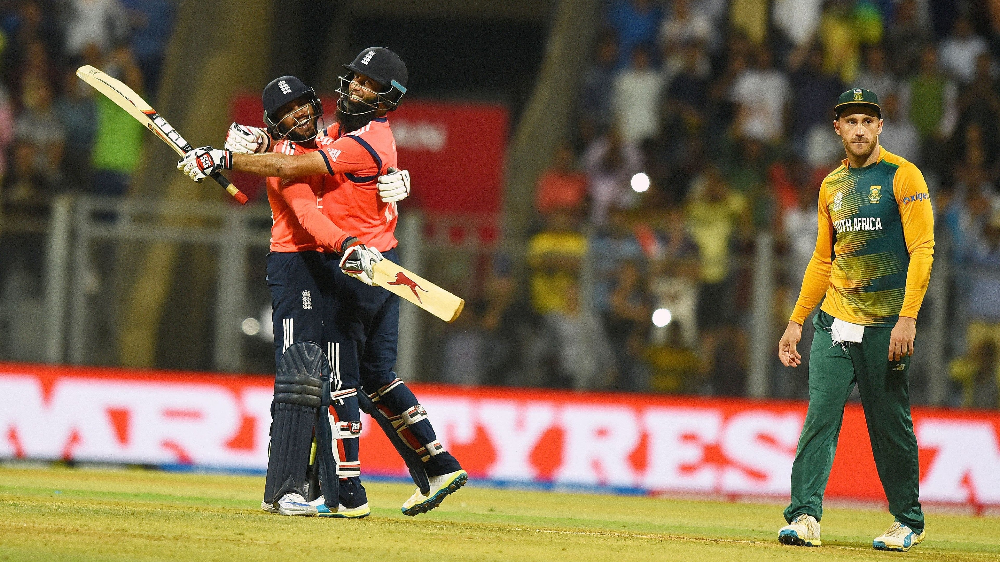
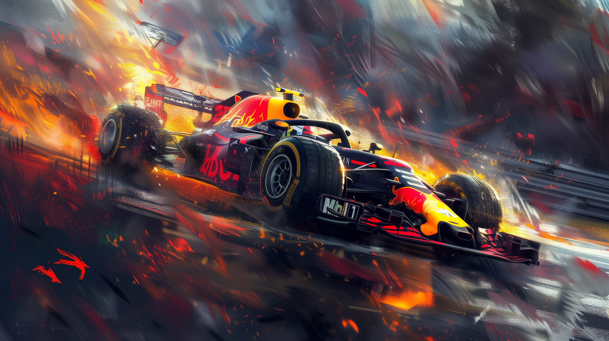
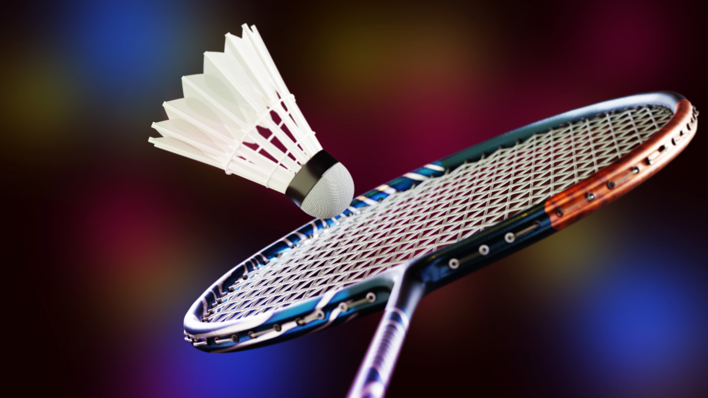
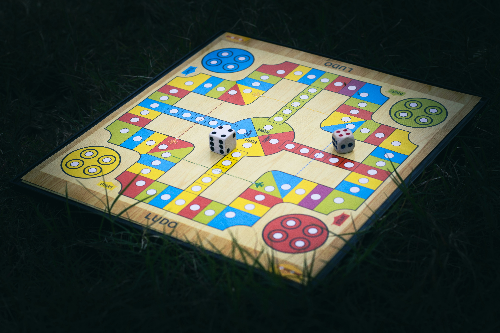
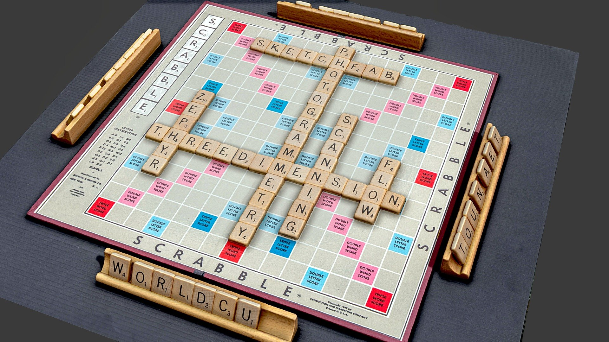
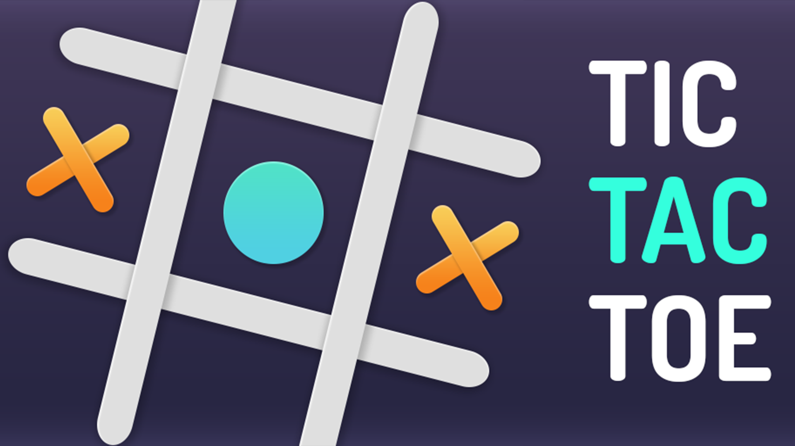
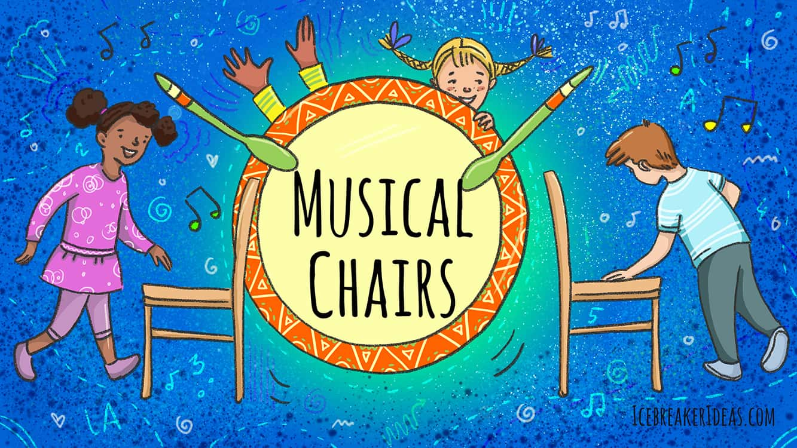
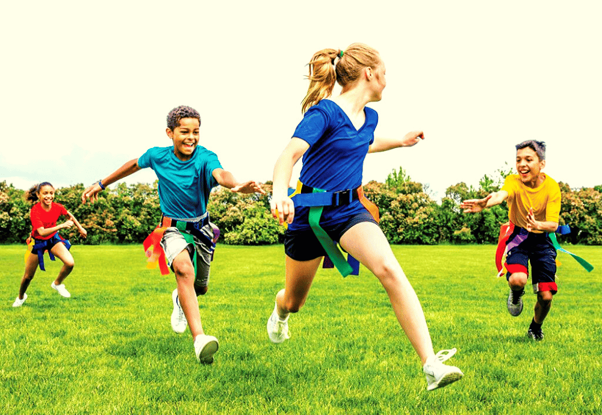

CAROME GAME

To play carom, you need a flat board with four corner pockets, carom coins (one red, and two white or yellow for each player), and a striker. The objective is to hit your coin (white or yellow) with the striker to pocket it, while also trying to sink the red coin, known as the queen. The game is played by taking turns, aiming to sink all your coins before your opponent. A chalk is often used to improve grip, and the board should be placed on a stable, level surface.
To play carom, place the board on a flat surface and arrange the coins with the red coin in the center. Players take turns using the striker to hit their coin (white or yellow) and try to pocket it into one of the corner pockets. The goal is to pocket all your coins before your opponent. The red coin (queen) must be pocketed, and then another coin must follow to secure the point. The player who sinks all their coins first wins the game.
The time required to play a game of carom can vary depending on the players' skill level and the rules being followed. A typical game usually takes between 15 to 30 minutes, but it can be shorter or longer depending on how quickly players sink their coins. In casual play, games tend to be faster, while more competitive matches may take a bit longer. Generally, a game is completed once a player sinks all their coins and the queen, or when a set time limit
LUDO GAME

To play Ludo, you need a Ludo board, which is typically square and divided into four colored sections (red, green, yellow, and blue). Each player requires a set of four matching tokens in their designated color. Additionally, you'll need a single die, which is rolled to determine how many spaces a player moves their token. The game can be played with 2 to 4 players, and the goal is to move all your tokens from the starting area to the center of the board.
To play Ludo, each player places their four tokens in their respective colored starting areas. Players take turns rolling the die to move their tokens around the board, with the goal of getting all four tokens to the center. A token can only enter the board once a player rolls a six. Players must follow the rules for capturing opponents' tokens and use strategy to block or advance their own pieces, aiming to be the first to get all their tokens home.
The time required to play a game of Ludo typically ranges from 30 to 60 minutes, depending on the number of players and their strategies. Games with fewer players tend to be faster, while more players can make the game longer due to increased competition. The time can also vary based on the pace at which players roll the dice and make their moves. On average, a full game of Ludo usually lasts around 40 minutes.
CHESS GAME

To play chess, you need a chessboard with 64 squares arranged in an 8x8 grid. Each player requires 16 pieces: one king, one queen, two rooks, two knights, two bishops, and eight pawns, all typically in black and white sets. The board should be set up so that each player’s pieces are placed on the two rows closest to them, with the back row holding the major pieces and the pawns in front. A chess clock may also be used in timed games, but it is not essential for casual play.
In chess, players set up their pieces on an 8x8 board, with each piece moving in specific ways: pawns move forward, knights in an "L" shape, bishops diagonally, rooks straight, queens in all directions, and kings one square at a time. Players take turns moving their pieces, aiming to checkmate the opponent’s king by placing it under attack with no escape. The game ends when one player checkmates the other or a draw occurs.
The time required to play a game of chess can vary, but it typically lasts anywhere from 30 minutes to 1 hour. Casual games may be quicker, while competitive matches, especially with longer time controls, can take several hours. The use of a chess clock can speed up the game by limiting the time each player has to make their moves.
CRICKET

To play cricket, you'll need a cricket bat, a ball, wickets (stumps and bails), protective gear like a helmet, pads, and gloves, as well as a cricket bat handle and grip. The playing field should include a pitch, boundary markers, and a proper playing surface for optimal gameplay.
To play cricket, one team bats while the other bowls and fields. The bowler delivers the ball to the batter, who tries to score runs by hitting the ball and running between the wickets or hitting boundaries. The fielding team aims to get the batter out by various methods, such as catching the ball or hitting the stumps.
A standard game of cricket typically lasts anywhere from 3 to 8 hours, depending on the format (e.g., Test, One Day, or T20). In shorter formats like T20, matches last around 3-4 hours, while Test matches can span over five days.
FOOTBALL

To play football, you'll need a football, goalposts, and a playing field with clear boundary lines. Players should wear comfortable clothing, cleats for traction, and protective gear like shin guards for safety.
To play football, divide into two teams with one team starting as attackers and the other as defenders. The objective is to score goals by getting the ball into the opponent's goal, using any part of the body except the hands or arms (unless you're the goalkeeper). The game is played in two halves, with the team scoring the most goals winning.
A standard football match lasts 90 minutes, divided into two 45-minute halves with a 15-minute halftime break. Extra time and penalty shootouts may be added in knockout stages if the game ends in a draw.
HOCKEY

To play hockey, you'll need a few essential pieces of equipment to ensure safety and performance. This includes a hockey stick, which is used to handle the puck or ball, and a puck or ball, depending on the type of hockey being played. Additionally, protective gear like a helmet, shin guards, gloves, and padding are crucial to prevent injuries during the fast-paced game.
To play hockey, start by gripping the hockey stick with both hands, keeping your body low and balanced. Use the stick to control the puck or ball, passing, shooting, or defending as needed while maintaining awareness of other players. Always wear your protective gear, including the helmet, gloves, and shin guards, and follow the rules of the game to ensure both safety and fair play.
The time required to play a game of hockey typically depends on the format and level of play, but a standard game lasts around 60 minutes, divided into three periods. Each period generally lasts 20 minutes, with short breaks in between for rest and strategy. If you're practicing, sessions can vary, with drills usually lasting between 30 to 90 minutes depending on the focus and intensity.
SCRABBLE

To play Scrabble, you need a Scrabble board, letter tiles, and a tile bag. Each player draws seven tiles from the bag and takes turns forming words on the board using the letters on their tiles.
In Scrabble, players take turns forming words on the board using their letter tiles. Each word must connect to a previously placed word, and points are earned based on the letters used and the special board squares. The game continues until all tiles are used or no more moves can be made.
Scrabble usually takes around 30 minutes to an hour, depending on the number of players and how quickly they make their moves. For a more competitive game, it might last longer.
TIC TAC TOE

To play Tic-Tac-Toe, you need a 3x3 grid, which can be drawn on paper or created using a board. You'll also need two markers, typically X and O, for each player to mark their moves.
In Tic-Tac-Toe, two players take turns placing their markers (X or O) in the empty squares of the grid. The goal is to get three of your markers in a row, either horizontally, vertically, or diagonally. The first player to do so wins, and if all squares are filled without a winner, the game is a draw.
Tic-Tac-Toe usually takes about 5 to 10 minutes, depending on how quickly the players decide their moves. The game can be finished faster if both players are familiar with the rules. If it's played in a relaxed, casual way, it may take a bit longer, especially if it's a close game.
MUSICAL CHAIR

To play Musical Chairs, you need enough chairs for the players, with one fewer chair than the number of participants. You'll also need music to play and pause during the game. When the music stops, players must find a chair to sit in, and the last person remaining wins.
In Musical Chairs, players walk around the chairs while the music plays. When the music stops, they must quickly sit in a chair; the player left standing without a chair is eliminated. The game continues until only one player remains.
Musical Chairs usually takes about 10 to 15 minutes, but the duration depends on the number of players and how many rounds are played. As the game progresses, it becomes quicker since one chair is removed each round. The game ends when only one player remains, making it a fun and fast-paced activity.
TAG GAME

To play Tag, you don't need any special materials—just an open space to run around. One player is chosen as "It," and they must chase and tag the other players. The game can be played anywhere, such as a backyard or park, and requires no equipment.
In Tag, one player is chosen as "It" and must chase the other players to tag them. Once a player is tagged, they become "It" and the game continues. The objective is to avoid being tagged while trying to tag others.
Tag can be played for as long as the players want, but typically it lasts around 10 to 20 minutes. The duration depends on the number of players and how active the group is. It can be shorter if players are eliminated quickly or longer if the game is played
SACK RACE

To play Sack Race, you need large burlap sacks that players can jump into. Each participant needs one sack, and the race requires a flat, open space where players can run. The sacks should be big enough for players to fit in comfortably while jumping forward.
In the Sack Race, each player steps into a sack and holds it around their waist. When the race starts, players must jump towards the finish line while staying inside the sack. The first player to reach the finish line wins the game.
The Sack Race typically takes about 5 to 10 minutes, depending on the number of players and the length of the race. It can be shorter or longer, depending on how fast the participants move and how many rounds are played.
TUG OF WAR
To play Tug of War, you need a strong rope that is long enough for both teams to hold onto. The rope should have a marker in the center to indicate the starting point. You also need a flat, open area where players can pull the rope without any obstacles.
In Tug of War, two teams grab onto opposite ends of the rope. On a signal, both teams pull the rope in opposite directions, trying to get the center marker past a designated line or point. The team that successfully pulls the rope across the line wins the game.
Tug of War typically takes around 5 to 10 minutes per round, depending on the strength and coordination of the teams. The game may last longer if there are multiple rounds or if the teams are evenly matched.
Become a member today and experience the thrill of sports with us!
"This membership offers great value, providing free training sessions. However, there are some limitations on the available equipment."
Click here to get membership"This membership provides full access to a wide range of equipment, allowing for a more extensive training experience, though it may come at a higher cost."
Click here to get membershipThis is the premium membership with this membership you get chance to participate on competetions with no extra or hidden charges
Click here to get membershipAt Sports Academy School, we believe in the power of play, fitness, and community. Our mission is to provide world-class training and experiences in a variety of sports for individuals of all ages, abilities, and interests.
Whether you're training for a personal goal, competing in a championship, or just having fun with family and friends, we've got you covered. From indoor games to outdoor adventures, we offer something for everyone!
We specialize in coaching various sports, both indoor and outdoor, for people of all skill levels.
Join in on the excitement! We organize competitive events and championships for all ages.
From family games to kids' training sessions, we create safe and fun environments for everyone.

Project Manager
Expert in front designs with over 4 years of experience
Backend Developer
Expert in Backend with over 4 years of experience
Social Media Manager
Expert in handling social media with over 4 years of experience
"The website offers a seamless experience for gaming memberships and training, making it easy to access top-tier resources."

"The site provides an intuitive platform for gaming enthusiasts to explore memberships and training with ease."

"An excellent resource for gamers, offering easy access to memberships and professional training programs."